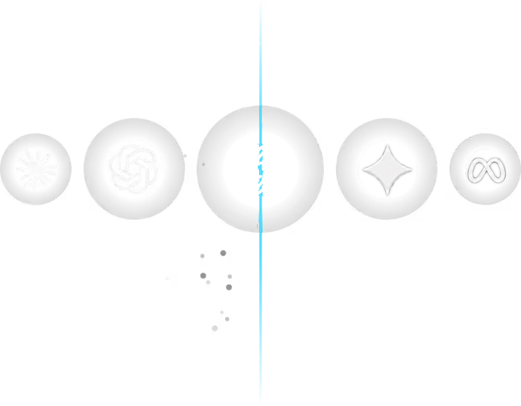

المشاريع والصلاحيات
لكل تسليم سياقه الخاص. ينظم النموذج المحلي عمليات التشغيل حسب المشروع مع صلاحيات مسؤول أو مشغل أو قارئ.
للفرق التي تبني وكلاء بالفعل.
نبني طبقة تشغيلية تتيح لشركات تطوير البرمجيات ومقدمي التكامل تشغيل الوكلاء بإصدارات محددة وحدود وسجل لكل مشروع.
نموذج أولي قيد التطوير
01 run.queued
02 run.started
03 run.succeeded
04 run.container_cleanupمسار توضيحي · لا يجري تنفيذ في هذه الصفحة
01 / البنية
واجهة لمتابعة العمل. بيئة لتنفيذه. وسجل لفهم ما حدث.

لكل تسليم سياقه الخاص. ينظم النموذج المحلي عمليات التشغيل حسب المشروع مع صلاحيات مسؤول أو مشغل أو قارئ.
يُتحقق من الطلب قبل إضافته إلى قائمة الانتظار. تساعد حدود العمل المعلق في ضبط الحمل مع إبقاء حالة التشغيل واضحة.
يحجز عامل التنفيذ الطلب ويشغل الإصدار المحدد. يستخدم عرض Docker صورة مثبتة بمعرفها وحدودًا للموارد.
راجع المدخلات والمخرجات والأحداث المسجلة. اطّلع على الانتظار والمعالجة وصدّر عملية تشغيل بتنسيق JSON.
تشغيل Python محليًا وعرض Docker تجريبي، وسجل لكل مشروع وضوابط وصول أولية.
دمج وكلاء العملاء، وتسجيل دخول للإنتاج وسياسات للميزانية. ستُفتح المشاريع التجريبية مع تقدم التحقق التقني.
02 / كيف تعمل
مسار بسيط من شيفرتك إلى تشغيل قابل للتتبع. يجري تطوير الدعم الأولي باستخدام وكيل تجريبي خاص بنا.
احزم الوكيل وحدد عقد المدخلات والمخرجات. الهدف هو الحفاظ على شيفرتك وإطار عملك.
اربط التشغيل بمشروع واختر من يمكنه تشغيله. ضع الحدود قبل قبول طلبات جديدة.
راجع قائمة الانتظار والحالة والأحداث. ألغِ الطلبات التي لم تبدأ بعد وتابع وقت المعالجة.
استخدم السجل وملف JSON المصدّر للتحقيق في الإخفاقات ومناقشة الإصدار التالي مع الفريق.
03 / الحلول
من العرض الأول إلى تشغيل العملاء، بخطوات واضحة.
نظّم تشغيل الوكلاء الذين تقدمهم. افصل المشاريع وثبّت الإصدارات وابحث عن سجل كل تشغيل.
أساس تشغيلي لربط حلول مبنية بأدوات مختلفة، دون إنشاء لوحة جديدة لكل مشروع تجريبي.
مرجع مشترك لفرق التطوير والتشغيل: الصلاحيات وقائمة الانتظار وسجلات المعالجة.
لا نعد في هذه المرحلة بتنفيذ شيفرة عشوائية أو بعزل مناسب للإنتاج. سنوسع العرض عبر مشاريع تجريبية مضبوطة.
04 / قائمة الانتظار
تابع تطور Unitize. سيفتح التسجيل للأخبار والمشاريع التجريبية المقبلة عندما تتوفر خدمة التسجيل.
استكشف البنيةهذه صفحة تعريفية عامة ومؤقتة لـ Unitize. لا تزال المنصة وخدمة تسجيل الاهتمام قيد التطوير.